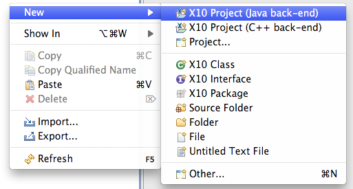
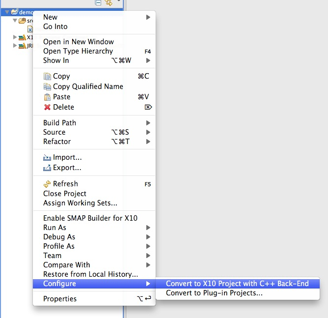

Here are descriptions of some of the more interesting or significant changes made to the X10 Tooling Platform for the 2.1 release. They are grouped into:
| X10 Development Toolkit | |
| Project Back-End Conversion |
When one creates an X10 project with a given back-end,
 there is now an opportunity to convert the project to another back-end by right-clicking on the project and selecting "Configure > Convert to X10 Project with ...". Such conversion is available in both directions for the two back-ends currently supported by the X10 compiler. |
| Build path |
Inclusion and exclusion patterns are now supported in the build path configuration.
The placeholders allowed are:
|
| Source editors |
You can now open source editors on the X10 runtime source code. There are two ways to do this:
|
| Auto-indentation | Several bugs in the auto-indentation support in the source editor have been fixed, and indentation should now behave as expected. |
| Correct indentation | You can now re-indent the current text selection in the source editor by invoking "Correct Indentation" from the "Source" menu in either the main menu bar or the editor's context menu. |
| Source menu | The X10DT now provides a "Source" menu in both the main menu and the editor context menu, with several common menu items: "Correct Indentation", "Shift Left/Right", and "Toggle Comment". |
| Entity information (F2) | You can now hit F2 in the source editor to pop up a window showing information on the entity at the text caret. If there are compiler messages at that site, these will be displayed in the pop-up view; otherwise, information about the entity's declaration will be shown. |
| Java Back-End | |
| C++ Back-End | |
| Additional Notes | |
| Memory Consumption |
Memory consumption by the editor and the build process has been improved since previous releases. It is still a work in
progress. You may encounter either two memory-related errors:
|
| Builder Performance |
The current build mechanism is somewhat conservative in determining the set of files to be recompiled upon each save. This will cause longer build times under certain circumstances. We've provided a building option, "Conservative Build" - turned on by default, which if turned off (see X10 Preferences) can result in shorter build times. However the shorter build time comes at the expense of incorrect behavior for certain X10 source programs. |